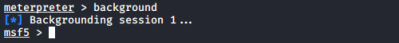
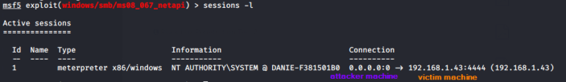
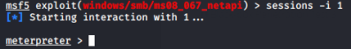

sessions
background → a single instance of msfconsole can host multiple meterpreter sessions, with
background command we can put in background the actual session this allow us to continue to use the metasploit framework and its functionalities without losing the session with the remote machine
session -l → list of the currently opened sessions in background
sessions -i <number> → To resume a background session that we have put previously in background, <number> is the Id of the session that we want to interact
